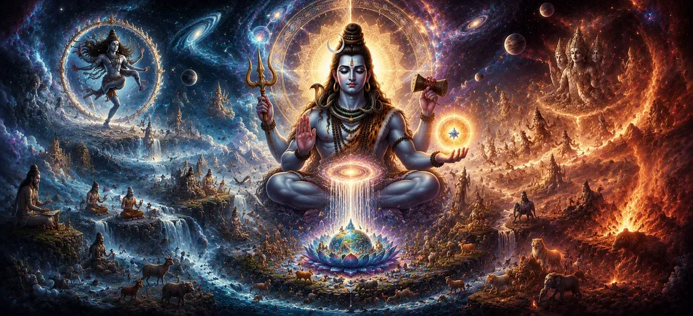

Having understood the divine purpose behind creation, the sages desired to know the source from whom this magnificent universe truly emerged. Although Lord Brahma had performed the visible act of creation, they understood that no creator can exist without the Supreme Power that grants the ability to create. With folded hands, they humbly asked, "Who is the Eternal Creator behind all creators, and whose divine will sustains the entire cosmos?" In response, the sacred narration reveals one of the highest truths of the Shiva Purana: before the appearance of Brahma, Vishnu, the gods, the sages, Time, and even the universe itself, there existed only the infinite, formless, eternal Lord Shiva. He alone is the beginning without beginning, the cause without cause, and the supreme source from whom every aspect of creation continuously arises.
The Shiva Purana declares that Lord Shiva is not merely one deity among many. He is the eternal reality beyond all names, forms, and limitations. From His infinite consciousness arises the power through which Brahma creates, Vishnu preserves, and Rudra dissolves the universe at the appointed time. Every divine function is ultimately an expression of His limitless will. This glorious chapter praises Lord Shiva as the Eternal Creator—not because He personally fashions every form with His own hands, but because every creative force, every law of nature, every living being, and every universe exists only through His boundless presence. To know this truth is to understand the deepest foundation of creation itself.
Long before the appearance of the heavens, the earth, the stars, the gods, or even the flow of Time itself, there existed only the infinite presence of Lord Shiva. There was no beginning or end, no light or darkness, no form or direction. The Supreme Lord alone remained in His eternal, limitless, and self-luminous state, beyond all description and beyond the reach of ordinary thought. The Shiva Purana declares that creation does not bring Lord Shiva into existence; rather, creation itself appears through His eternal existence. Just as waves arise from the ocean without changing the ocean itself, countless universes emerge from the infinite consciousness of Mahadeva while He forever remains unchanged.
The sacred scriptures teach that Brahma, Vishnu, and Rudra perform the three great cosmic functions of creation, preservation, and dissolution. Yet the power enabling them to fulfill these responsibilities originates entirely from Lord Shiva. Without His divine energy, no creative act could begin, no universe could be sustained, and no cycle could reach its proper completion. For this reason, the Shiva Purana glorifies Mahadeva as the Supreme Cause of all causes—the eternal foundation upon which every divine activity depends.
Every creation begins through the will of Lord Shiva.
The universe appears as an expression of His infinite consciousness.
While creation changes, Lord Shiva remains forever unchanged.
Although Lord Shiva is worshipped in many sacred forms, the Shiva Purana repeatedly reminds devotees that His true nature transcends every visible appearance. He may reveal Himself through the Shiva Linga, through divine incarnations, or through countless cosmic manifestations, yet none of these fully limit His infinite being. To meditate upon Shiva as the Eternal Creator is to recognize Him as both the formless Absolute and the compassionate Lord who lovingly reveals Himself for the welfare of creation. In this profound understanding, philosophy and devotion become one.
Time governs every created object. Mountains slowly erode, stars are born and fade away, civilizations rise and disappear, and even the greatest beings eventually complete their earthly roles. Yet Lord Shiva alone remains untouched by the passage of time. He neither grows nor declines, neither begins nor ends, for He is the eternal reality from which Time itself first emerged. The Shiva Purana therefore proclaims that Mahadeva is not merely the Creator of the universe but also the Master of Time. While countless cycles of creation and dissolution unfold, the Supreme Lord remains forever established in His infinite and unchanging glory.
Every star shining in the heavens, every river flowing across the earth, every living creature, and every breath taken by humanity is sustained by the unseen presence of Lord Shiva. His divine energy silently supports the universe without demanding recognition or praise. The Shiva Purana teaches that the Lord is present equally within the smallest particle and the greatest galaxy. To recognize His presence everywhere is the beginning of true spiritual wisdom.
Lord Shiva does not merely create the universe and remain distant from it. Out of infinite compassion, He continuously guides every soul toward truth. Through sacred scriptures, enlightened sages, spiritual teachers, holy places, and divine inspiration, He shows humanity the path that leads beyond suffering. Whenever righteousness declines or spiritual understanding weakens, the grace of Lord Shiva appears in countless forms to restore balance and remind living beings of their eternal relationship with Him.
Meditate upon Lord Shiva as the eternal source of all existence.
Offer prayers with humility, gratitude, and unwavering devotion.
Serve all living beings, seeing the presence of Lord Shiva in everyone.
The Shiva Purana proclaims that every divine power found within the universe originates from Lord Shiva alone. The wisdom of the sages, the strength of the gods, the brilliance of the sun, the cooling light of the moon, and the sacred vibrations of the Vedas all arise through His infinite consciousness. Nothing possesses independent power apart from the Supreme Lord. Even the great Trimurti perform their cosmic responsibilities only because they are empowered by Mahadeva. Lord Brahma creates, Lord Vishnu preserves, and Lord Rudra dissolves according to the eternal order established by Shiva. Thus, every divine activity throughout the universe is ultimately a reflection of His limitless glory.
From ancient times, the greatest sages, enlightened yogis, celestial beings, and devoted seekers have worshipped Lord Shiva as the Supreme Reality. They recognized that worldly achievements are temporary, while union with the Eternal Lord alone brings everlasting peace. Shiva is adored not because He demands worship, but because His infinite compassion freely blesses every being without discrimination. He forgives the sincere, uplifts the fallen, removes ignorance, and guides every soul toward liberation with boundless love.
Worlds appear through His divine will.
Time governs creation but never governs Shiva.
The Supreme Lord remains forever unchanged and infinite.
Empires rise and fall, stars are born and disappear, and countless universes complete their cycles. Yet Lord Shiva remains the same yesterday, today, and forever. His eternal nature is the unshakable foundation upon which the entire cosmos depends.
The sages listened with profound reverence as the mystery of the Eternal Creator was revealed before them. They understood that behind every visible form stands the invisible Supreme Lord, whose infinite consciousness supports the universe through every moment of existence. To know Lord Shiva is to know the source of creation itself. Filled with gratitude, the sages bowed before Mahadeva, recognizing Him as the beginning without beginning, the cause of all causes, and the eternal refuge of every soul. Their devotion prepared them to receive even deeper revelations concerning His limitless greatness in the chapters that follow.
"Before the first breath of creation, before the flow of time, and before the birth of gods and worlds, Lord Shiva alone existed. He is the Eternal Creator, the Supreme Cause, and the infinite refuge of every soul."
The eternal glory of Lord Shiva as the Supreme Creator has now been revealed. Continue to the next chapter to explore the Seven Higher Worlds (Sapta Lokas), the sacred realms established within creation, and understand their spiritual significance in the divine order of the universe.